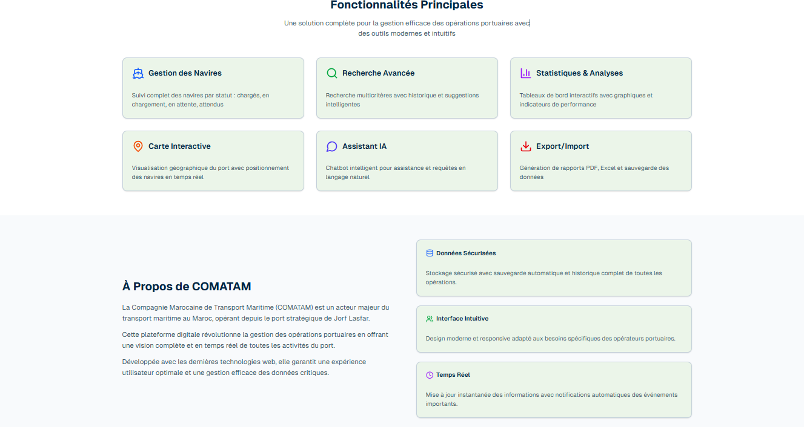

Projet 01 · 2025–2026
Classification des signaux ECG
Pipeline de Deep Learning sur la base PTB-XL : prétraitement de signaux 12 dérivations, comparaison de cinq architectures et interface de classification avec Streamlit.
À la recherche d’un stage PFE
Élève ingénieure en Génie Logiciel
IA & Data Science
Je conçois des solutions où le logiciel, les données et l’intelligence artificielle répondent à des problèmes concrets.
01 / Projets sélectionnés
Projet 01 · 2025–2026
Pipeline de Deep Learning sur la base PTB-XL : prétraitement de signaux 12 dérivations, comparaison de cinq architectures et interface de classification avec Streamlit.
Projet 02 · 2025–2026
Data Warehouse en étoile, indicateurs DAX, dashboard interactif, segmentation K-means et analyse prédictive.

Projet 03 · Stage 2024–2025
MVP pour digitaliser la collecte et le suivi des données portuaires, avec API REST, tableau de bord et rapports PDF.
02 / Expérience
SNOP · Groupe FSD Tanger
Conception d’une GMAO pour les équipements, interventions, stocks et achats. Intégration d’un assistant RAG exploitant la documentation technique et l’historique des pannes. Conteneurisation et déploiement Kubernetes K3s sur Azure avec CI/CD.
COMATAMSA · Groupe OCP Jorf Lasfar
Développement d’une application web de gestion portuaire : APIs REST, suivi opérationnel, dashboard et génération de rapports PDF.
03 / Compétences
TensorFlow / Keras, Scikit-learn, CNN, BiLSTM, ResNet1D, K-means, RAG, LangChain
Python, Pandas, NumPy, Power BI, Power Query, DAX, Data Warehouse, Streamlit
Java, JavaScript, TypeScript, Spring Boot, React, Node.js, Express, REST APIs
Docker, Kubernetes, GitHub Actions, CI/CD, Azure, AWS, Linux
PostgreSQL, MySQL, MongoDB, Prisma, modélisation dimensionnelle
Rigueur, autonomie, analyse, curiosité scientifique, travail en équipe
04 / Parcours
ENSIAS · Rabat
Faculté des Sciences Chouaib Doukkali · El Jadida
Langues
Arabe / Amazigh Langues maternelles Français Professionnel Anglais Intermédiaire05 / Contact
Je recherche un stage PFE en intelligence artificielle, machine learning, data science ou génie logiciel.